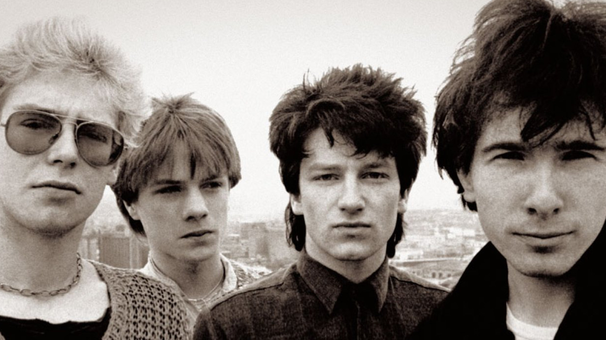

Sobre Nosotros
Inicios y sonido
U2 es una banda de rock alternativo originaria de Dublín (Irlanda), formada en 1976 por Bono (voz), The Edge (guitarra, teclado y voz), Adam Clayton (bajo), y Larry Mullen Jr. (batería). El sonido inicial de U2 tenía sus raíces en el post-punk, pero posteriormente irán incorporando a su música elementos de otros géneros:
"Su cancionero es extenso y está repleto de variaciones: desde el rock más clásico hasta el pop más redondo, pasando por el coqueteo con la electrónica o los homenajes al góspel".
A lo largo de la búsqueda musical de la banda, han mantenido un sonido construido a base de instrumentales melódicos, destacados por la textura musical de The Edge y la voz expresiva de Bono, a las que se suma una base característica integrada por la batería de Mullen y el bajo de Clayton. Sus letras, a menudo ordenadas con imágenes espirituales, se centran en temas personales y temática de justicia social y paz.
Discografía
U2 se formó en la Mount Temple Comprehensive School, cuando sus miembros iniciales eran adolescentes y tenían un limitado conocimiento musical. Al cabo de cuatro años, firmaron su primer contrato discográfico con Island Records y lanzaron su álbum debut, llamado Boy. A mediados de los años ochenta, la banda pasó a ser conocida mundialmente. Tuvieron más éxito como artistas en vivo que como artistas comerciales por lo que a venta de álbumes se refiere, hasta su álbum de 1987 que los catapultó a la fama, The Joshua Tree, el cual según la revista Rolling Stone, elevó a la banda «de héroes a superestrellas». La reacción a su "estancamiento" musical a finales de los años ochenta, hizo que el grupo decidiera reinventarse con su álbum de 1991, Achtung Baby en compañía del Zoo TV Tour; durante esta década U2 se influenciaría en el pop, la electrónica, el dance y el rock alternativo y los integraría a su sonido. Su salto más alejado a sus raíces sería en 1997 con el álbum Pop, un álbum que llevaba desde canciones de pop puro, hasta canciones más pop rock, hasta algunas sumamente alternativas como ‘Please’. El álbum tuvo un nivel de éxito medio, pero su sencillo de presentación ‘Discothèque’, le dio a la banda su primer sencillo top 10 en Estados Unidos desde 1992. U2 volvió a ganar un gran éxito comercial en el año 2000 con el álbum All That You Can't Leave Behind. Luego de este álbum U2 dejó de lado los sonidos experimentales que llevaron a cabo en la década de los 90, volviéndose más convencionales mientras mantenían sus influencias musicales iniciales retornando al sonido de sus primeros discos. Son uno de los artistas musicales con mayores ventas, vendiendo más de 170 millones de copias mundialmente. Han ganado 22 Premios Grammy, más que cualquier otra banda, y en 2005, fueron incluidos en el Rock and Roll Hall of Fame. Rolling Stone los posicionó en el puesto número 22 en su lista de los "100 Mayores Artistas de todos los tiempos".
U2 ha grabado catorce álbumes de estudio, su trabajo más reciente es Songs of Experience que contiene 13 canciones y fue lanzado el 1 de diciembre de 2017. Al día siguiente, 2 de diciembre, se convierte en número uno mundial en iTunes.